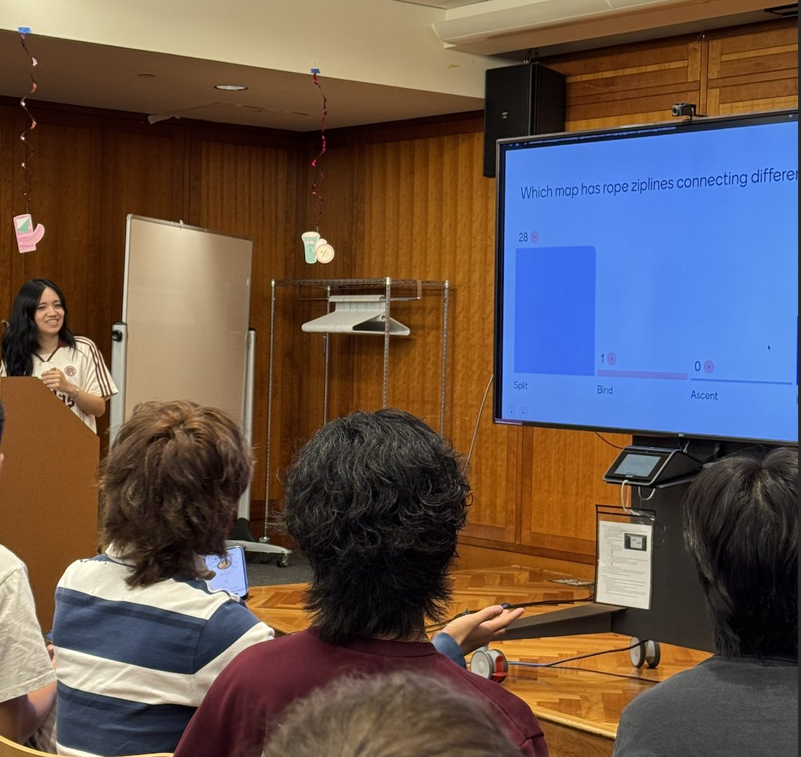
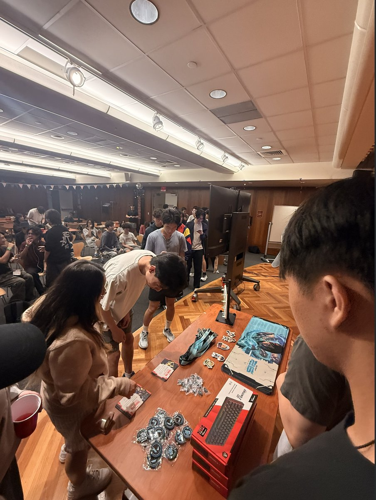
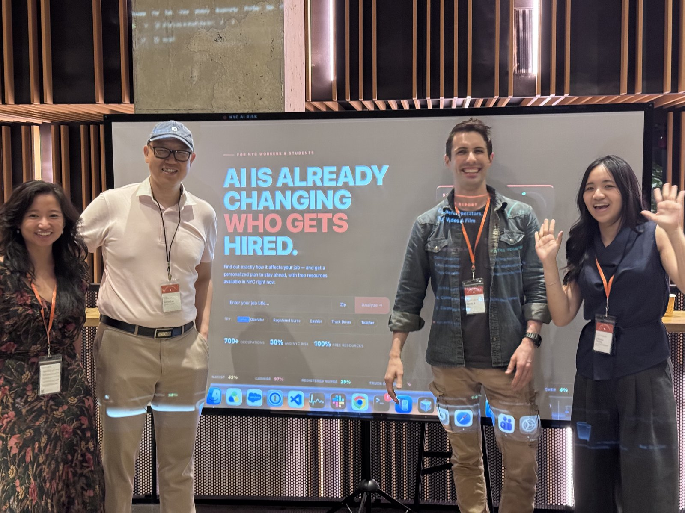
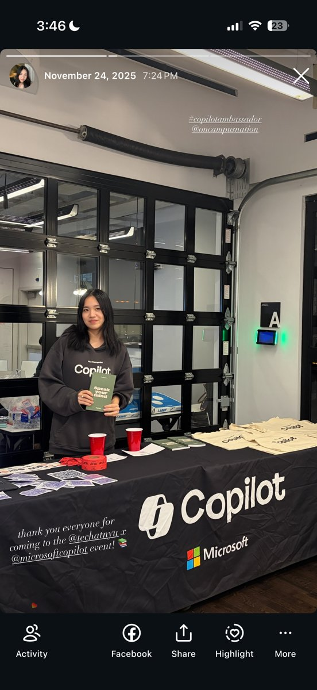
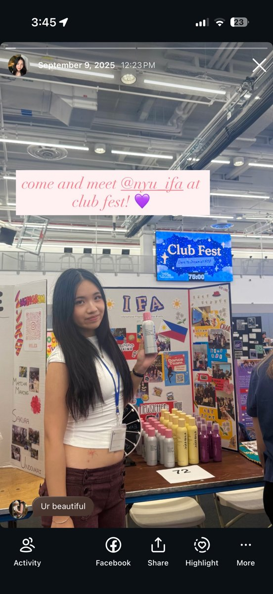
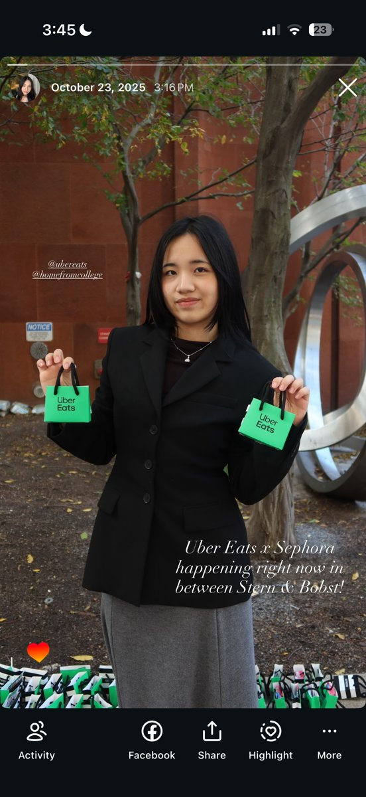

Charice Huang
"Every day should be more physically and intellectually stimulating than the last."
Human skills — communication, systemic thinking, judgment — are what make someone good at using Claude, not technical AI skill. This page was built because I've been passionate about the Claude Campus Ambassador program since the moment I heard about it in 2025.
6th–12th grade, entirely self-taught using the internet — no teachers, because I couldn't physically attend school. I'd research something for a week straight, then go buy it and learn it myself. That instinct never left.
If I can't bring my daydreams to fruition, who can?
I choreograph and direct because I love moving with intention.
Using free resources like Stanford's CS229 machine learning lectures!
Rising Senior @ NYU, graduating May 2027.
I became ambidextrous over the summer — once I finally figured out how I learn optimally, I just taught myself.
I choreograph and direct because I'm still learning what my own body can do. Every time I improve, I unlock a joint, a shape, a way of moving I didn't have access to before — and even though the shapes themselves are replicable, the creativity that puts them together isn't. I only dance to music that actually moves me. If it doesn't resonate, I won't perform to it, because how I move is inseparable from how the music makes me feel.
We can't teach prompt engineering. We need to teach communication and clear articulation.
Creativity is only latent in someone who holds knowledge across domains and connects the dots themselves. I want to expose students to endless possibilities of cross-discipline knowledge.
Demystifying how AI actually works — tokenizing, LLMs — is what reduces the reflexive, collective fear people get from taking claims at face value online.
I taught myself with free internet resources. Knowledge should reach students at no extra monetary cost.
I met people across industries who cared about humans first, tech second, and left with real leads, including the Center for Humane Technology. Ambassador Brandon hosted it in a rock-climbing gym, surrounded by plants and open space, and that ambiance choice taught me more about hosting than any framework could.
I've been tabling and hosting for orgs across NYU all year. I want NYU students to feel what I felt at Claude & Coffee, where I was given a room that makes it safe to build.

Hosting
NYU Esports trivia night

Hosting
NYU Esports, tabling

Attending
Claude & Coffee, Sept 2026

Tabling
Copilot × Tech @ NYU

Tabling
IFA, Club Fest

Tabling
Uber Eats × Sephora
How to strengthen human skills and intelligence alongside AI use.
Going through every setting and discussing what it's for — the skill being exercised is curiosity, fiddling with the tool the way a kid fiddles with a new toy.
Teaching the principles of neuroplasticity alongside prompt engineering — prompting well is a skill the brain rewires for with practice, same as any other human skill.
A practical walkthrough of the 4D framework applied outside of work — decisions, planning, everyday problem-solving.
Guided, theory-first — walk through the "why" before anyone touches a build. A direct answer to how build-first hackathons dominate campus programming right now.
Who it's for: you use AI for conversational prompting and haven't gone past that yet.
Less scaffolding, more open build time — for students who've already done the theory-first version.